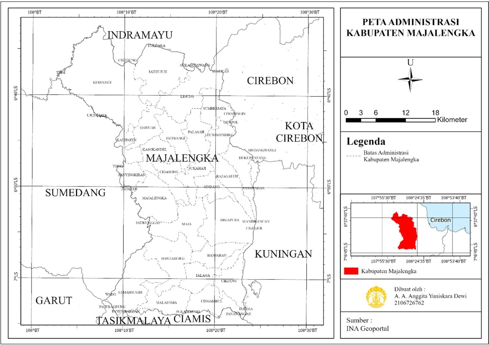
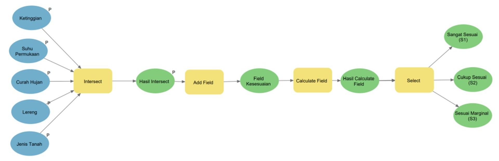
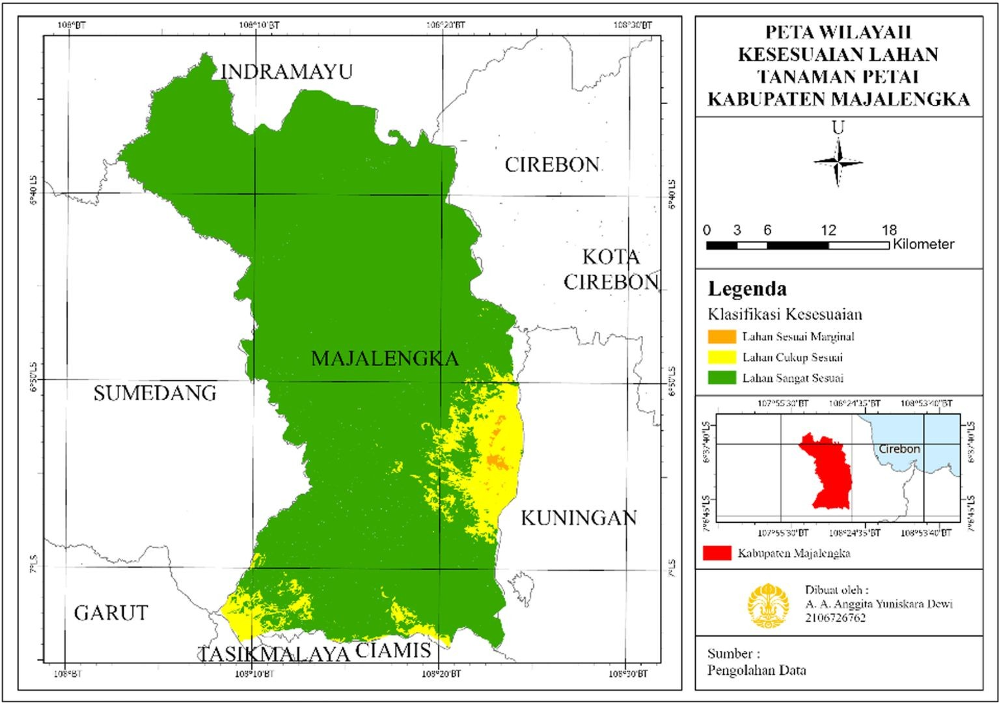
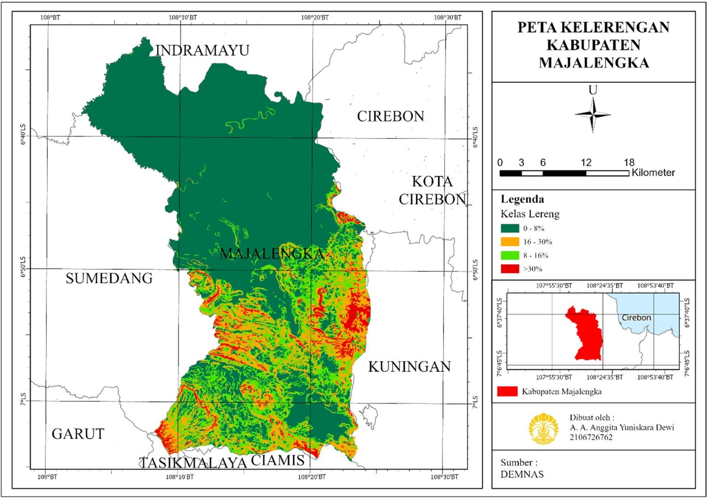
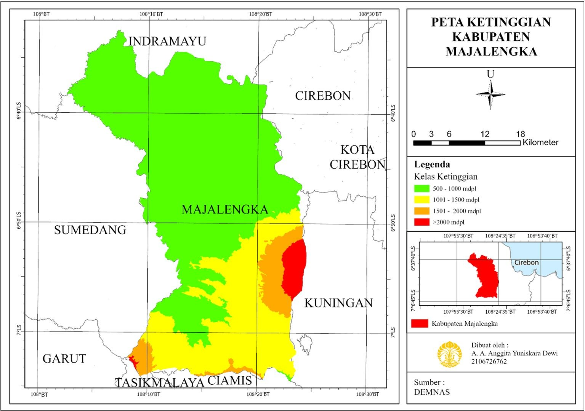
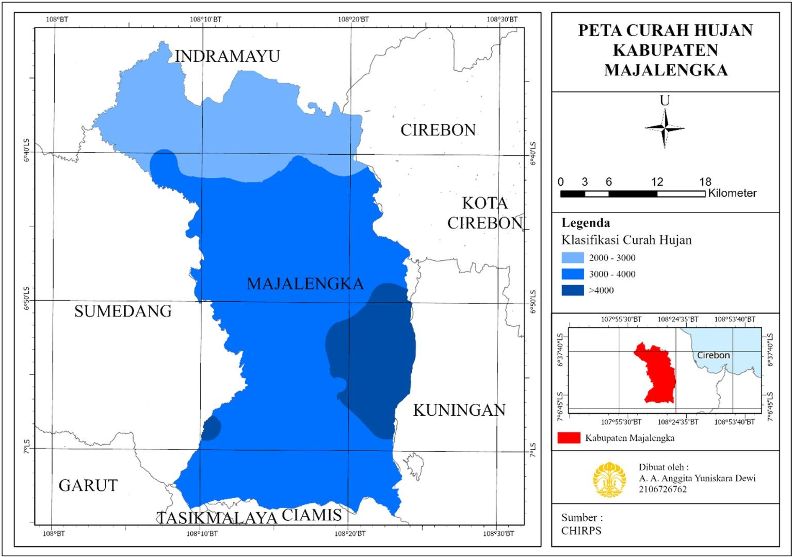
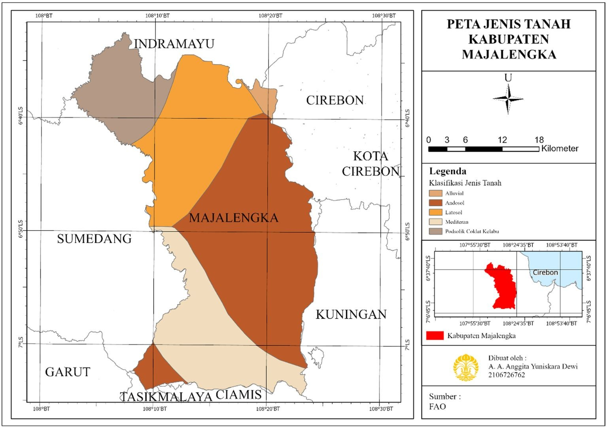
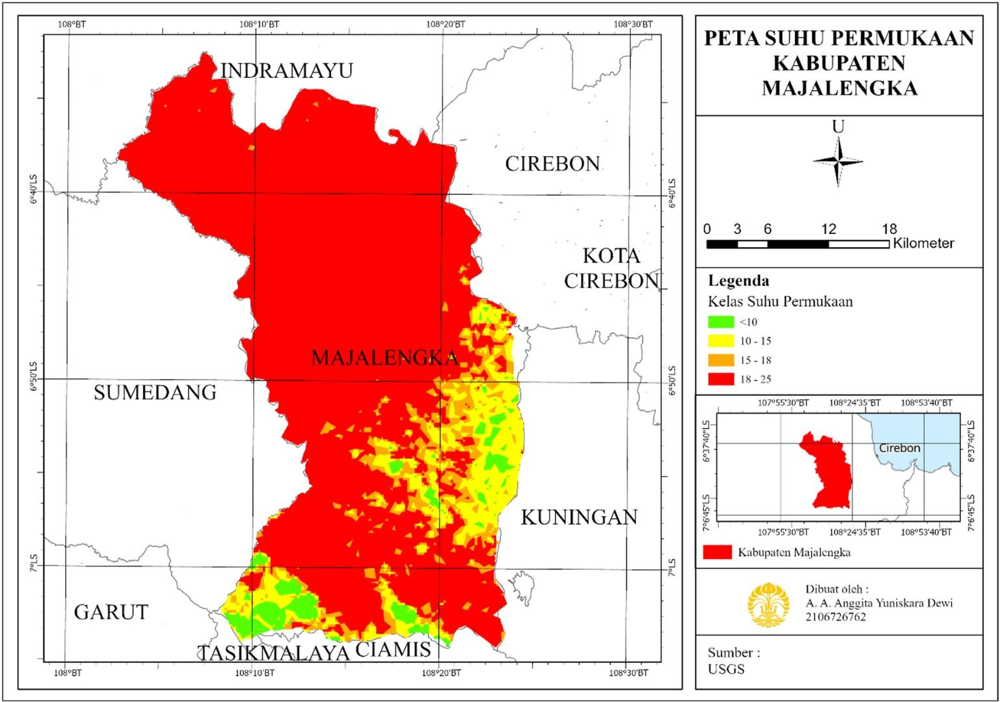

Analisis Kesesuaian Lahan untuk Tanaman Petai di Kabupaten Majalengka
Latar belakang
Petai (Parkia speciosa) adalah tanaman polong-polongan tropis berbentuk pohon setinggi sekitar 20 meter. Selain dikonsumsi luas oleh masyarakat dan dimanfaatkan dalam pengobatan tradisional, petai memiliki nilai ekonomi yang tinggi. Kabupaten Majalengka termasuk salah satu produsen petai terbesar di Jawa Barat dengan produksi mencapai 75.807 kuintal, sehingga petai menjadi komoditas unggulan daerah ini.
Persoalannya, produksi petai di Majalengka menurun dalam beberapa tahun terakhir. Penyebabnya bisa beragam, mulai dari pengelolaan kebun hingga kondisi lahan. Salah satu faktor yang dapat diuji secara spasial adalah apakah lahan yang ada masih sesuai dengan syarat tumbuh petai. Evaluasi kesesuaian lahan penting karena menentukan potensi dan kelas lahan untuk jenis penggunaan tertentu, sekaligus menjadi dasar perencanaan peningkatan produksi dan pemanfaatan lahan yang optimal.
Namun, petani petai di Majalengka belum memiliki informasi yang memadai tentang kesesuaian lahannya. Penelitian ini menjawab celah tersebut dengan pertanyaan, yakni bagaimana kesesuaian lahan untuk penanaman petai di Kabupaten Majalengka? Jawabannya dicari dengan Sistem Informasi Geografis (SIG) melalui metode skoring dan analisis overlay terhadap lima variabel syarat tumbuh.
Data yang digunakan
Seluruh data adalah data sekunder yang diperoleh dari lembaga terkait. Setiap data dipilih karena mewakili satu syarat tumbuh petai.
| Data | Tahun | Sumber | Peran dalam Analisis |
|---|---|---|---|
| Kelerengan | 2022 | DEMNAS | Diturunkan dari DEM menjadi kelas lereng (%) |
| Ketinggian | 2022 | DEMNAS | Kelas ketinggian (mdpl) |
| Curah hujan | 2022 | CHIRPS | Kelas curah hujan (mm/tahun) |
| Suhu permukaan | 2022 | USGS (Landsat) | Pendekatan syarat suhu tumbuh (°C) |
| Jenis tanah | 2022 | FAO | Kelas jenis tanah |
| Batas administrasi | – | INA Geoportal | Batas wilayah penelitian |
Metode
Wilayah penelitian
Kabupaten Majalengka berada di bagian utara Provinsi Jawa Barat, berbatasan dengan Indramayu di utara, Cirebon dan Kuningan di timur, Garut, Tasikmalaya, dan Ciamis di selatan, serta Sumedang di barat. Morfologinya sangat beragam. Bagian utara didominasi dataran rendah, sedangkan bagian selatan berupa perbukitan terjal hingga pegunungan, termasuk Gunung Ciremai (3.076 mdpl). Variasi ini membuat Majalengka menarik untuk analisis kesesuaian lahan, karena kondisi fisiknya berubah cukup tajam dalam jarak yang dekat.

Variabel dan skoring
Lima variabel dipilih berdasarkan syarat tumbuh petai. Petai tumbuh lebih baik pada lereng landai, ketinggian sekitar 500 sampai 1000 mdpl (masih dapat tumbuh hingga 1500 mdpl dengan hasil kurang optimal), curah hujan sekitar 1000 sampai 2000 mm per tahun, tanah seperti latosol dan mediteran yang bertekstur halus dengan pH sedikit asam (5,5 sampai 6), serta suhu rata-rata sekitar 18 sampai 25 °C. Setiap variabel diklasifikasikan ke dalam empat kelas dan diberi skor 1 sampai 4 berdasarkan kriteria Badan Penelitian dan Pengembangan Pertanian (2011). Semakin tinggi skor, semakin sesuai kondisinya.
| Kelas | Skor | Lereng | Jenis Tanah | Ketinggian (mdpl) | Curah Hujan (mm) | Suhu (°C) |
|---|---|---|---|---|---|---|
| Sangat sesuai (S1) | 4 | < 8% | Latosol, Mediteran, Andosol, Regosol | 500 – 1000 | 1000 – 2000 | 18 – 25 |
| Cukup sesuai (S2) | 3 | 8 – 16% | Podsolik Coklat | 1001 – 1500 | 500 – 1000; 2000 – 3000 | 15 – 18; 25 – 30 |
| Sesuai marginal (S3) | 2 | 16 – 30% | Litosol, Histosol | 1501 – 2000 | 250 – 500; 3000 – 4000 | 10 – 15; 30 – 35 |
| Tidak sesuai (N) | 1 | > 30% | Aluvial, Inceptisol | > 2000 | < 250; > 4000 | < 10; > 35 |
Alur pengolahan
Setelah tiap variabel diklasifikasikan dan diberi skor, kelima layer digabungkan dengan teknik overlay (intersect) di ArcGIS Pro sehingga setiap poligon hasil memuat kombinasi kelima atribut sekaligus. Kombinasi itu kemudian diberi kelas kesesuaian melalui fungsi Calculate Field, lalu masing-masing kelas dipisahkan dengan Select.

| Tahap | Keterangan |
|---|---|
| 1. Pengumpulan data | Mengumpulkan data sekunder lima variabel dan batas administrasi |
| 2. Klasifikasi dan skoring | Mengubah tiap variabel menjadi kelas dan skor 1 sampai 4 |
| 3. Overlay (Intersect) | Menggabungkan lima layer beserta tabel atributnya |
| 4. Penentuan kelas | Add Field dan Calculate Field untuk menetapkan kelas S1, S2, S3, atau N |
| 5. Seleksi dan luasan | Select per kelas, lalu Calculate Geometry untuk luas dan persentase |
Penentuan kelas dilakukan dengan aturan kombinasi. Sebuah poligon hanya masuk kelas sangat sesuai bila ketinggian, suhu, lereng, dan jenis tanahnya sekaligus memenuhi kriteria kelas tersebut. Poligon yang tidak memenuhi kombinasi kelas mana pun dikelompokkan sebagai tidak sesuai.
Hasil
Sebaran kelas kesesuaian
Hasil overlay menunjukkan bahwa sebagian besar Majalengka masuk kelas sangat sesuai (S1). Kelas ini tersebar hampir di seluruh wilayah, terutama dari bagian tengah hingga utara. Kelas cukup sesuai (S2) dan sesuai marginal (S3) hanya muncul sebagai bercak kecil di tepi timur dan selatan kabupaten.

Luas tiap kelas
Karena kelas S1 tampak dominan di peta tetapi luasnya belum pasti, luas tiap kelas dihitung dengan Calculate Geometry di ArcGIS Pro, lalu persentasenya diolah di Microsoft Excel.
| Kelas Kesesuaian | Luas (Ha) | Persentase (%) |
|---|---|---|
| Sangat Sesuai (S1) | 121.408 | 92,05 |
| Cukup Sesuai (S2) | 10.153,69 | 7,70 |
| Sesuai Marginal (S3) | 334,57 | 0,25 |
| Total | 131.896,26 | 100 |
Dari sekitar 131.896 Ha wilayah yang dianalisis, 92,05% berada pada kelas S1, 7,70% pada S2, dan hanya 0,25% pada S3. Selisih yang sangat timpang ini menunjukkan bahwa secara biofisik Majalengka masih menyimpan lahan yang luas dan layak untuk budidaya petai.
Mengapa pola kesesuaiannya demikian
Pola ini dapat dibaca dari peta variabel penyusunnya. Bagian utara Majalengka berupa dataran rendah dengan lereng landai (0 sampai 8%), sehingga syarat lereng dan ketinggian lebih mudah terpenuhi. Sebaliknya, bagian timur yang mendekati kaki Gunung Ciremai dan bagian selatan di perbatasan Tasikmalaya dan Ciamis memiliki lereng lebih curam dan ketinggian lebih besar. Di wilayah inilah kelas S2 dan S3 mengelompok. Dengan kata lain, topografi menjadi pembeda utama antara lahan yang sangat sesuai dan lahan yang hanya cukup sesuai.





Kesimpulan
Berdasarkan overlay lima variabel, yaitu lereng, ketinggian, curah hujan, jenis tanah, dan suhu permukaan, mayoritas Kabupaten Majalengka (92,05% atau sekitar 121.408 Ha) tergolong sangat sesuai untuk budidaya petai. Kelas cukup sesuai mencakup 7,70% dan sesuai marginal hanya 0,25% wilayah. Lahan yang kurang sesuai terkonsentrasi di bagian timur dan selatan yang lebih tinggi dan berlereng curam, sedangkan bagian tengah hingga utara menjadi kawasan paling potensial.
Temuan ini membawa satu implikasi penting, hal ini karena lahan yang secara biofisik sesuai masih sangat luas, penurunan produksi petai di Majalengka kemungkinan tidak semata-mata disebabkan oleh kondisi lahan. Faktor lain seperti pengelolaan kebun, hama dan penyakit, varietas, serta alih fungsi lahan layak diperiksa pada penelitian lanjutan. Sementara itu, peta kesesuaian ini dapat langsung dipakai sebagai acuan awal bagi petani dan pemerintah daerah untuk menentukan lokasi penanaman dan pemeliharaan petai yang lebih tepat.
← View other projects